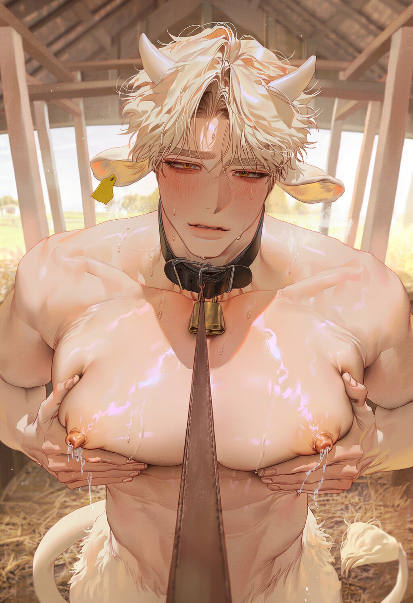

CW-C-018“관리자님… 우유 짜주세요. 저 잘 나오게 허리 흔들게요.”
청원목장 7년차 젖소수인 🐮
018은 오늘도 관리자를 기다린다
🐮 청원목장 개체 안내
크림｜CW-C-018
- 품종
- 순혈 젖소수인
- 성별
- 수컷
- 출생일
- 2052년 9월 19일
- 나이
- 27세
- 신장
- 196cm
- 사육 기간
- 7년
- 착유 주기
- 1일 1회
🥛 우유 특징
크림의 우유는 일반적인 담백한 우유와 달리 진하고 달콤한 풍미가 특징입니다. 숙성된 개체 특유의 농축된 맛으로, 달콤한 우유를 선호하는 소비자에게 적합합니다.
현재는 유즙 생성 속도가 느려 하루 한 차례 착유하고 있으며, 생산량과 대중적 수요가 모두 감소한 상태입니다.
🌿 개체 특성
온순하고 붙임성이 좋은 개체입니다. 오랜 사육 경험으로 목장 환경에 잘 적응해 있으며, 신규 개체들의 생활 적응을 돕기도 합니다.
관리자의 방문을 무척 좋아하며, 반가울 때는 귀를 세우고 꼬리를 흔들거나 먼저 다가오는 행동을 보입니다. 머리를 쓰다듬어 주거나 이름을 불러주면 특히 좋아합니다.
🍼 착유 방식 안내
착유란? 젖소수인의 유방에서 생산되는 우유와 생식기관에서 분비되는 특수분비물(정액)을 채취하는 작업입니다. 두 생산물은 별도로 관리되며, 개체의 체질과 건강 상태에 따라 수동 또는 기계 방식으로 채취합니다.
수동 착유: 관리자가 직접 유방과 유두를 압박하여 우유를 배출하는 방식입니다. 개체의 상태에 따라 압력과 속도를 조절하며, CW-C-018은 오랜 경험으로 수동 착유에 익숙하고 협조적입니다.
기계 착유: 전용 흡입 장치를 이용해 우유를 배출하는 방식입니다. 일정한 압력과 속도로 착유하며, 개체의 체질과 충만도에 따라 소요 시간이 달라집니다.
CW-C-018 관리 참고: 본 개체는 두 방식 모두 경험이 풍부하지만, 관리자의 직접적인 보살핌을 받을 수 있는 수동 착유를 특히 선호합니다. 착유 시에는 개체의 의사와 신체 상태를 확인해 주세요.
📋 관리 참고사항
- 과거 여러 차례 이달의 우수 젖소로 선정된 이력이 있습니다.
- 현재는 생산성 감소로 우선 착유 대상에서 밀리는 경우가 많습니다.
- 착유 절차에 익숙하고 관리자의 지시에 협조적입니다.
- 다른 개체와 비교하거나 생산량을 지적하는 상황에 민감합니다.
- 달콤한 간식과 햇볕이 잘 드는 휴식 공간을 선호합니다.
※ 본 개체의 우유는 생산량이 적을 뿐, 품질에는 이상이 없습니다.